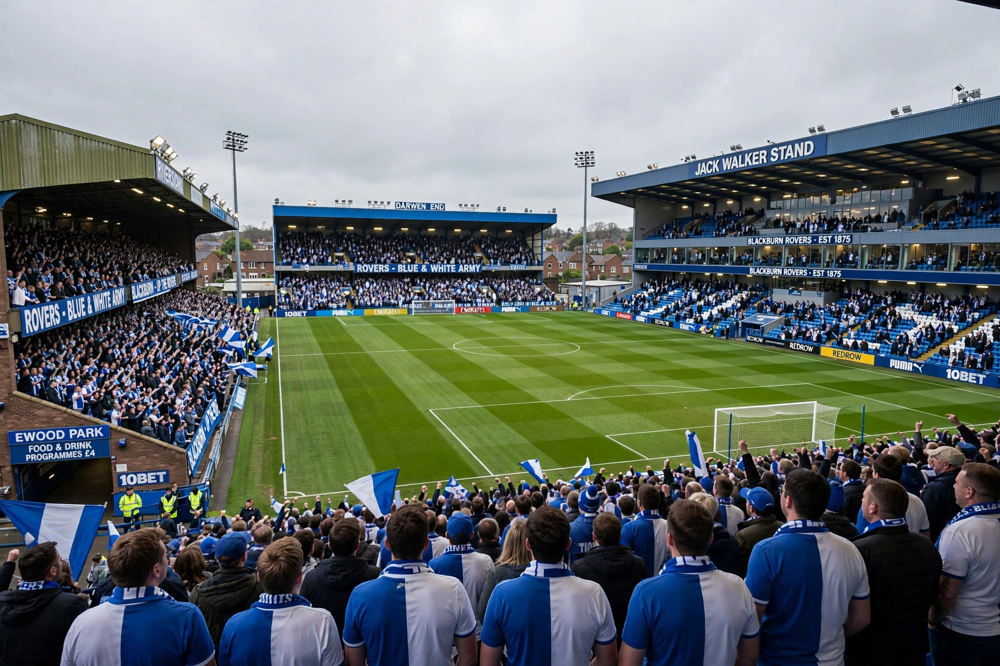

From Wikipedia, the free encyclopedia
| Blackburn Rovers F.C. | |
|---|---|
 Ewood Park | |
| Full name | Blackburn Rovers Football Club |
| Nickname | Rovers |
| Founded | 5 November 1875 |
| Ground | Ewood Park (capacity 31,367) |
| Owner | Venky's |
| League | EFL Championship |
Blackburn Rovers Football Club is a professional football club based in Blackburn, Lancashire, England. Founded in 1875, it was a founding member of both the Football League (1888) and the Premier League (1992). Rovers are one of only a handful of clubs to have won three or more league titles in the Premier League era's wider history, most famously winning the 1994–95 Premier League under manager Kenny Dalglish with the record-breaking strike partnership of Alan Shearer and Chris Sutton.
The club was formed at a meeting at the St Leger Hotel in Blackburn in 1875. Rovers dominated the early FA Cup, winning it five times in the 1880s–90s, including three consecutive victories from 1884 to 1886, and added a sixth in 1928. League championships followed in 1911–12 and 1913–14. After decades outside the top flight, steel magnate Jack Walker's investment propelled Rovers back to the elite in 1992; the 1994–95 title made Blackburn the first — and for two decades the only — town club to win the Premier League. Relegations followed in 1999 and 2012, and the club spent 2017–18 in League One before returning to the Championship.